20 October 2026 · Proposed · 6 frames. What is on the phone, the device’s settings, the one gate a share can carry, and the Player open on a Fold7.
Downloads
Shared
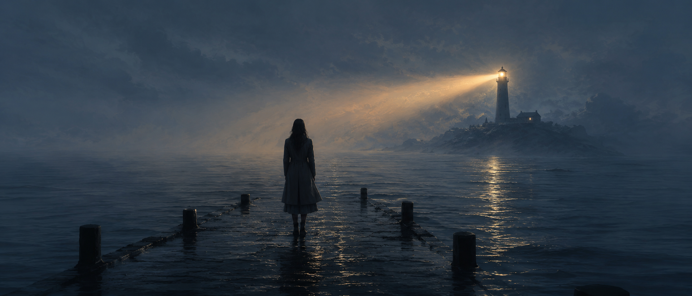
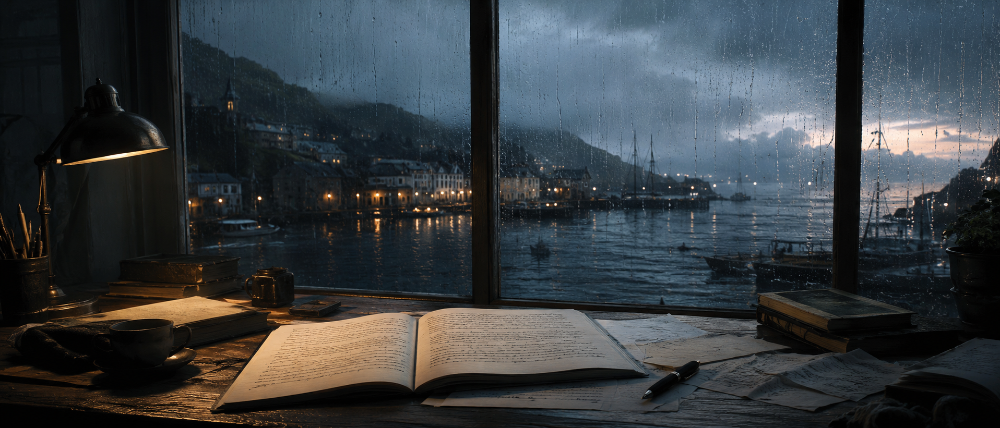
Added
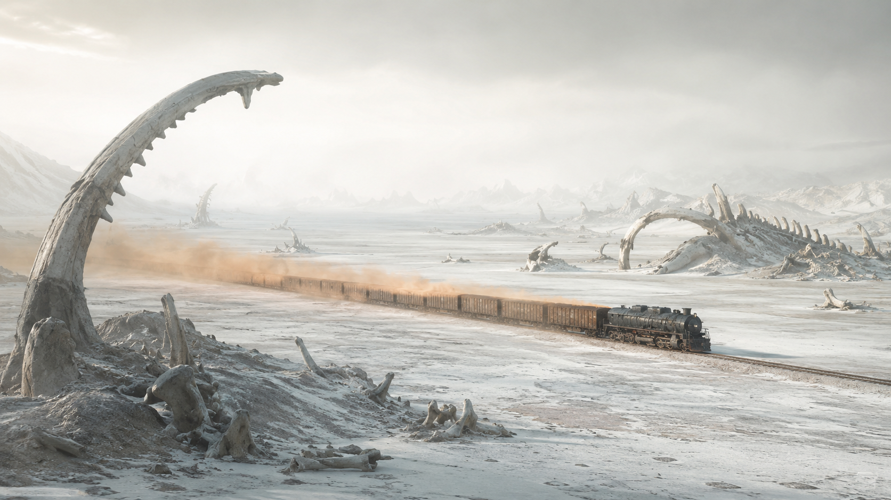
You
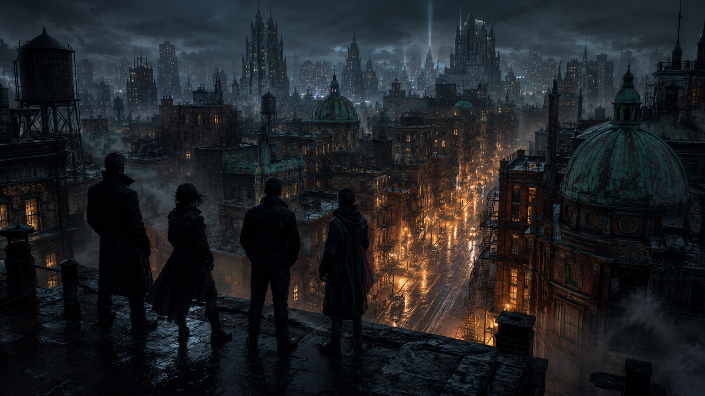
Copper Saints
Watch
Listen
Home
OfflineJPContinue

New
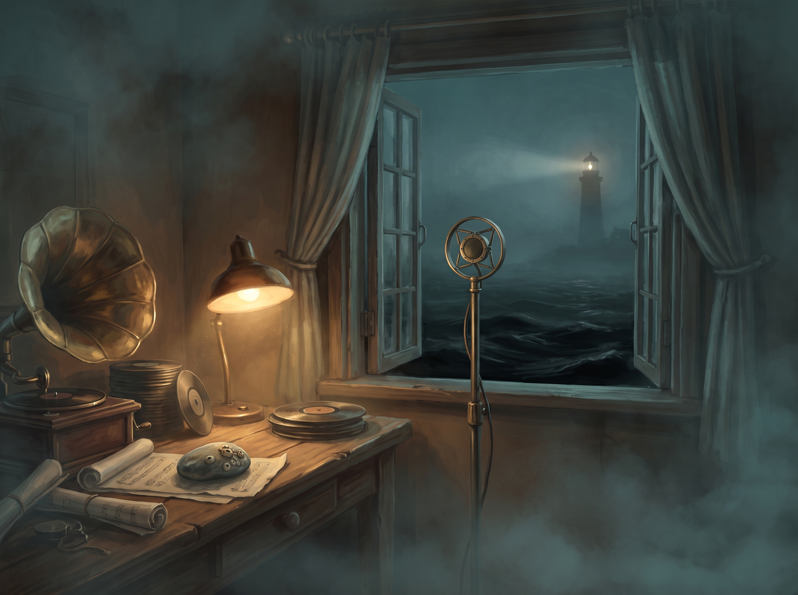
Worlds
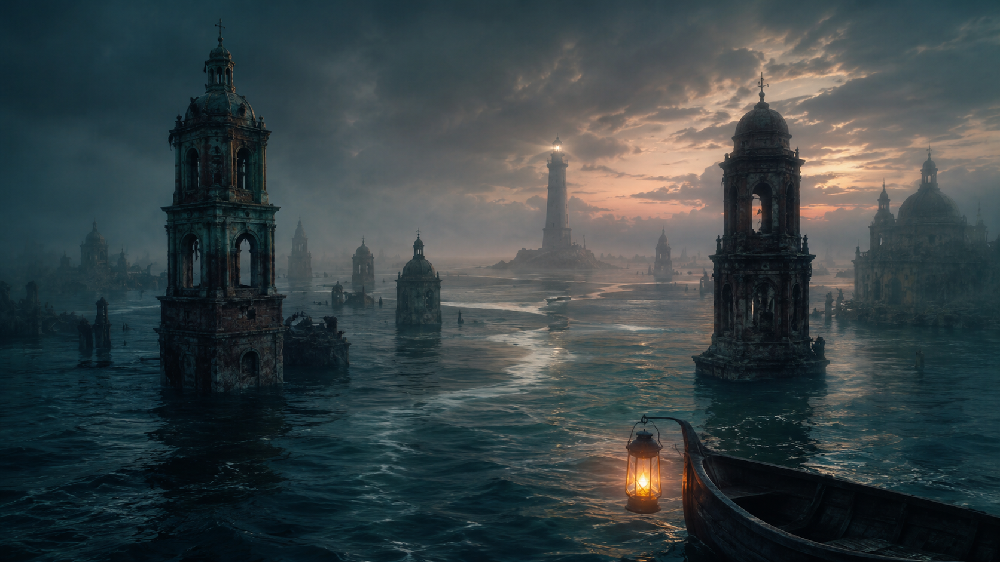
The Undersong
Meridian Dust
Home
JPContinue
New
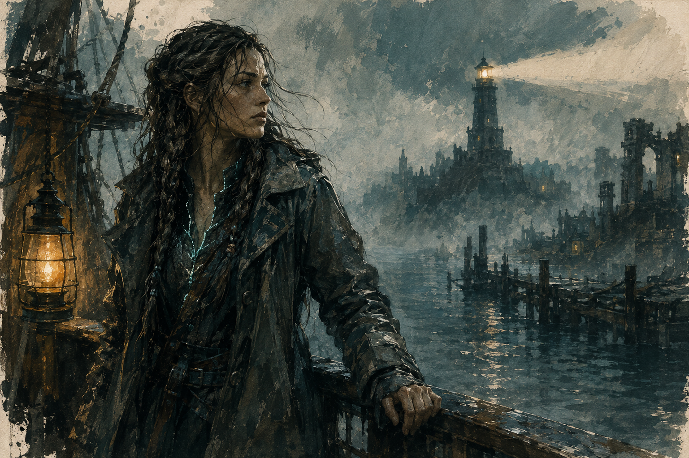
Worlds
The Undersong
Copper Saints
Meridian Dust
1 · Downloads. A shared production plays from the cloud until it is downloaded; an added package is always on the phone. The tab opens on the space Arke Player takes against the rest and what is free, then Shared downloads — each with its size and a downloaded mark, Downloading · 42% with its line, or Waiting for Wi-Fi — then Added packages (P6a). ⋯ on a row removes it. Downloads wait for Wi-Fi while Wi-Fi only is on.
2 · Offline. Without a network the head of Home says Offline (P6d). What is on the phone plays as ever; a shared production not downloaded is greyed with offline on its kind line and does not open. Places made offline are kept and sent on the next connection.
3 · You. The account — picture, name, address, Account ↗ (Studio 151) and Sign out — then Playback: Captions, Text, Slow push, Autoplay next; Downloads: Wi-Fi only, Storage; Content: Adult content; then About (P6b), in Studio 149’s row grammar. Every setting is this device’s.
4 · Adult content. Off by default. A production its owner marked adult shows blurred, with 18+, and does not open; a press offers Adult content is off with I am 18 or older · Turn on and Not now (P6c). Turning it on is a personal choice made once on this device and undone in You (Studio 154).
5 · On a Fold. At 600 wide and over the tabs become an 88-wide rail, Continue cards are 420 wide and the shelves widen (P6e). A player keeps the picture the page — 16:9 across the top at the full width — with the words and the transport centred under it at 640, the words at text-2xl (P6f). Bands: under 600 a phone; 600 to 1099 a Fold or a tablet.
6 · Implementation boundary. Nothing here is built. The Arke cloud — accounts, shares, streaming — does not exist yet: the Studio’s account seam answers Arke cloud is not available yet. The first build can ship packages, the players and downloads, and take shares when the cloud arrives. The world package and the share model are owed to the specs (SPEC-048, SPEC-025) before either is built.
Try next: “Storage open” · “a download failed” · “the Fold folded mid-play”
20 October 2026 · Proposed · 5 frames. Studio 186’s audiobook player with 211’s Slow push and 212’s two lines, an audio drama with its transcript, and the book an edition carries.
Chapters
22Speed
Sleep
The Tenth Key
The key had no teeth. Odile turned it over twice in the lamplight before she understood that it was not meant for a lock at all.
Below the window the harbour lay flat and black. The bells had stopped an hour ago, and the silence they left behind was louder than any of them.
“You found it,” Bray said from the door. He did not come in.
“It found me.” She closed her hand around it. “Where is the tenth door?”
He looked at the water for a long time before he answered.
1 · An audiobook is 186’s player. The picture of the moment fills the top 62% (P5a); Slow push sits under the title as a labelled switch 44 high (Studio 211); Text shows only the current phrase, at most two lines at text-lg, centred above the transport (Studio 212). The transport: previous chapter, back 15, play or pause 64, forward 30, next chapter; under it the speed, the sleep choice and Text. Chapters and ⋯ at the top (Studio 186).
2 · Chapters. A glass sheet (P5b): each chapter’s number, title and length, a check when finished, the playing one with its line of progress, a downloaded mark. A chapter the edition does not hold is not listed: a publication carries only chapters read whole (186).
3 · Speed and sleep. One sheet (P5c): speed 0.8× · 1.0× · 1.2× · 1.5× · 2×, the pitch kept (186); sleep Off, End of chapter, 15 min, 30 min, 60 min. Both kept on the device.
4 · An audio drama. The episode’s picture as a 16:9 card at the top, then the edition’s transcript (Studio 230): the speaker in label caps over the line, the line being heard in full ink and the rest at 46%, a sound cue in brackets and italics (P5d). The transcript follows the audio; a press on a line plays from it. The transport is the audiobook’s, with Transcript and Episodes.
5 · A book. The edition’s EPUB on the shelves’ theme (P5e): ⌄, the chapter, Aa (size; Paper, Sepia, Night) and Contents at the top; the text; at the foot the page in the chapter (12 of 30) with its line, and Listen when the edition has narration. Listen opens that chapter in the audiobook at its kept place, else its start. Reading and listening keep separate places (Studio 224).
6 · The phone’s controls. Audio plays with the screen locked; the lock screen and headset drive it, with the picture of the moment as the artwork (186).
Try next: “an audio drama’s episodes” · “Aa open” · “the lock screen”
20 October 2026 · Proposed · 5 frames. Studio 156’s interactive player and 174’s visual novel, on a phone and inside the Player.
Route

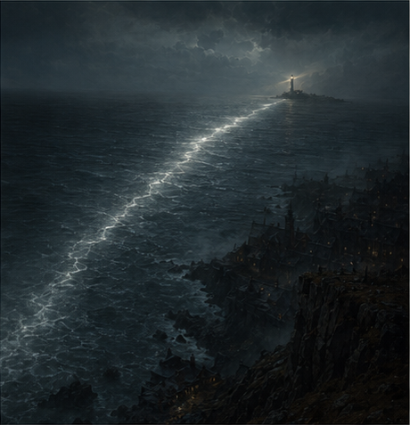
Log
Scene 31 · An interactive movie is 156’s player. On a phone the choices stack full width where the thumb is, 58 high, in authored order, the first in focus, Replay scene under them; captions and the route sit at the top (P4a, Studio 156i). Nothing counts down: untimed is the only built behaviour (156).
2 · The route. A glass sheet over the picture (P4b): each scene watched with its 96 × 54 still, the choice taken between them with Choose again, and Start over. No endings found, no percentages (156).
3 · An ending is a title. ENDING, the ending’s title in text-4xl, the route as stills with the choices taken in one line, then Start again and Back to last choice (P4c, 156e on a phone).
4 · A visual novel is 174’s player. The box above the home indicator, 12 in from each edge, the speaker’s tab and the line in text-lg; a tap anywhere moves on; Auto, Log and ⋯ (Route, Start over) at the top (P4d, Studio 174g). Log is a glass sheet of the scene’s lines up to now, newest last, each with its play (P4e, 174e).
5 · Where you are. A place is kept on the device, per routing version (156f): a scene and a time, or a scene and a beat. On a production’s page Continue names the scene; Start over is in ⋯.
Try next: “three and four choices on a phone” · “a visual novel at 16:9 on a phone” · “the route of a long story”
20 October 2026 · Proposed · 5 frames. The Player hosts the players the Studio already draws; a film and a micro drama get the transport a phone needs.
Episodes
40Captions
Size
1 · One player, three homes. The players are Studio 156’s, 174’s and 186’s: the same framework-free modules the Studio previews with and the packages carry (156: one player, two homes). The Player runs those modules and adds only its close (⌄, back to where the player was opened) and the phone’s media session around them — lock screen and headset controls, background audio, picture in picture, casting. What plays in a browser from a package plays the same in the Player.
2 · A film. The picture is the page (156): letterboxed, never cropped, on the overlay colours. Held upright, the picture sits in the middle with the chrome over two scrims (P3a); turned, it fills the height (P3b). A film’s scrubber runs across the whole film, since a film has a length. The transport: Captions, back 10, play or pause 64, forward 10, full screen; the time as 54:40 / 1:32:40; Cast at the top. The chrome rests after 2.5s while playing and never while paused.
3 · A micro drama is a feed. One episode a screen, 9:16, full bleed (P3c). Swipe up for the next episode, down for the one before; a tap pauses. The top holds ⌄ and the production over Episode 13; a column at the right edge holds Episodes, Captions and More, 44 across with their names; a 3-high scrubber sits above the home indicator, the episode’s number and title over it. At an episode’s end the next begins (Autoplay next, on by default, in You).
4 · Episodes. A glass sheet over the picture, which keeps playing (P3d): the count, 1–20 · 21–40, and the episodes as numbered tiles five across, 48 high — seen ones dimmed, the current one inverted. A press plays that episode from its kept place, else its start.
5 · Captions. A sheet of the publication’s text tracks by their label, Off first, the chosen one checked, then Size S · M · L (P3e). The choice is kept on the device and applies to every production that carries that language; one without it plays with captions off.
Try next: “a series with seasons” · “casting to a TV” · “a micro drama paused”
20 October 2026 · Proposed · 7 frames. A shared world arrives as a link; a package arrives as a file. Both end as a world in Library.
Shared with you
Shared with you
Library
The Undersong
Copper Saints
Add a package
Library
The Undersong
Copper Saints
Checking
Inside
Library
The Undersong
Copper Saints
Library
The Undersong
Copper Saints
Meridian Dust
1 · A share opens from its link. A share link opens the Player (an app link; without the Player, its store page). The sheet Shared with you shows the world’s key art and name, who shared it — picture and name — and the count, then Open; signed out, Sign in with Arke ↗ and Not now (P2a). Signed in to an account the share was not made for, the sheet says Not shared with this account and offers Switch account.
2 · Sign-in is the browser’s. As Studio 151: no password field in the Player. The press hands off to the system’s browser sheet, the presses give way to waiting for the browser and Cancel (P2b), and the Player keeps the session. Arke account is the only account it knows.
3 · What a share is. A share gives one account the productions its owner chose from a world, as publications, under the world’s name, key art and logline. The owner can add productions — they appear under New — and can stop sharing. Who and what is set in the Studio, in a Share sheet this master does not draw. A shared production streams from the Arke cloud until it is downloaded (P6a).
4 · A share that ends. The world stays in Library, greyed, with No longer shared and Remove on its card (P2g). Nothing in it opens, and its downloads are deleted the next time the Player reaches the cloud. Its places are kept until Remove, so a share made again resumes where it was.
5 · Adding a package. + in Library, and Add a package on first open, open a sheet of two: Choose a file (the system’s picker) and Paste a link (https only) (P2c). A package also arrives from the system’s Open in and Share menus. Accepted: a world package — a ZIP holding the world’s name, logline and key art and one or more publications, each with its own publication.json — or one publication’s ZIP. The world package is a proposal; its format is owed to SPEC-048 before it is built.
6 · Checked before it is shown. Free space is checked first: a package larger than what is free is refused before it is copied. The Player then copies the file into its own storage and checks every asset’s byte length and SHA-256 against its manifest: Checking, the file’s name and size, a bar, 212 of 418 files, Cancel (P2d). Nothing in a package plays before the check passes.
7 · Ready. The summary is what the manifests say (P2e): the world’s picture and name, made 12 Oct 2026 · 3 productions · 1.4 GB, each production with its kind and size under Inside, the space it takes against what is free, and Add to library. Closing deletes the copy.
8 · Refused in one clause. A refusal is its title (P2f): 3 files do not match, Made with a newer Arke (with Update), Not an Arke package, Needs 1.4 GB · 0.9 GB free. Nothing partial is added and the copy is deleted. Choose another file and Close.
9 · A package is the person’s. An added world is removed only by Remove, needs no account and is never uploaded to one.
Try next: “Not shared with this account” · “a package arriving from Open in” · “Made with a newer Arke”
20 October 2026 · Proposed · 6 frames. Asked: a phone app, Arke Player, that plays what is made in Arke — productions from worlds shared through Arke, and Arke packages a person adds — reusing the players already drawn in the Studio master. The Studio stays where things are made; the Player is where they are watched, heard, read and played.
Home
JPContinue
New
Worlds
The Undersong
Copper Saints
Library
The Undersong
Copper Saints
Meridian Dust
The Undersong
Watch
Play
The Tenth Key
Chapters
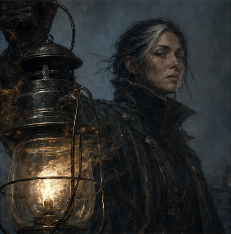
The Bell Watch
Episodes
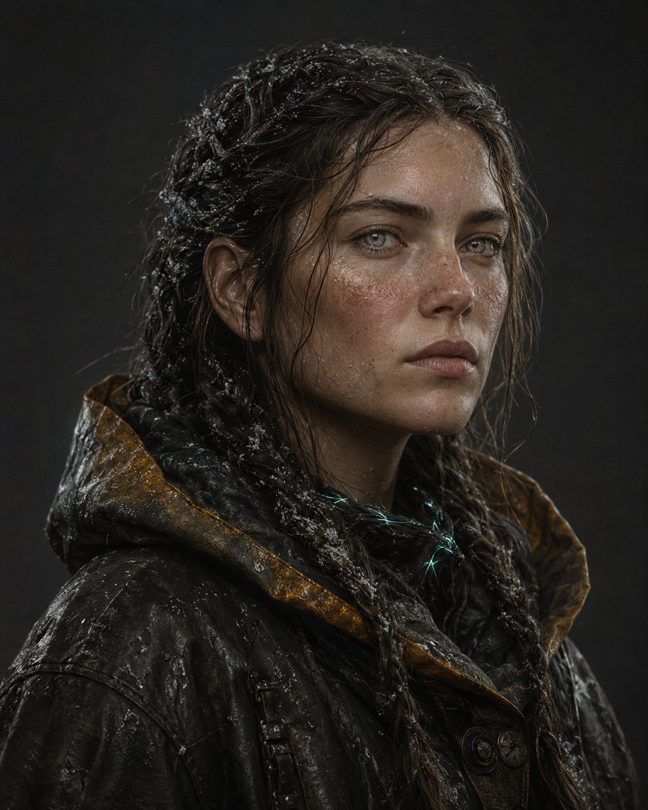
1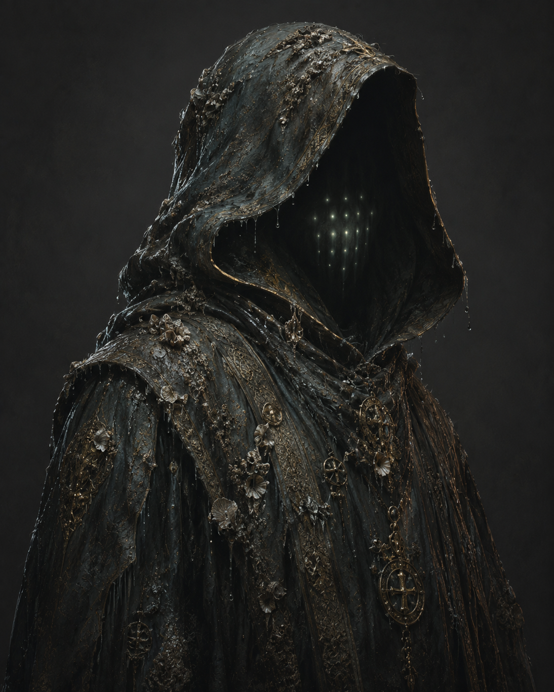
81 · What it plays. Arke Player is a phone app for publications: films, micro dramas, interactive movies, visual novels, audiobooks, audio dramas and books. A publication is a frozen edition with its own manifest (SPEC-048, publication.json). The Player never opens a world’s source: no sheets, prompts, takes, settings or unpublished work reach it, and nothing in it edits, generates or spends.
2 · Two ways in, no gate. Things arrive as a share through an Arke account (P2a) or as a package added from a file (P2c). Neither needs the other: a package plays with no account. First open (P1a) is the wordmark over a world’s picture and two presses, Sign in with Arke ↗ and Add a package; no tour, no sentence.
3 · Four tabs. Home, Library, Downloads, You, in a bar 84 high (56 pressable, the rest the home indicator’s), icon over label, the current tab in full ink. A page pushed from a tab keeps the bar. On a Fold the bar becomes an 88-wide rail (P6e).
4 · Home is for going on. Three sections, each absent when empty (P1b): Continue — what is in progress, last played first, at most 8, cards 300 × 169; New — productions added to a shared world since this device last looked, the world on the kind line; Worlds — every world, 240 × 135. A Continue card names the kind, the title and where you are as data (Chapter 7 · 19 min left, 38 min left, Episode 13, The drowned quarter) over a 3-high line of progress. An interactive or visual novel card names its scene and draws no line, because a route has no length (Studio 156). The round press resumes in the player; the card opens the production. Finished things leave Continue.
5 · Library is every world. A card per world, 358 × 190, under the chips All · Shared · Added, with + (Add a package) in the head (P1c). A shared world’s meta line is who shared it and the count (Helen Marsh · 6 productions); an added one’s is Added · 3 productions · 1.4 GB.
6 · A world’s page. The world’s key art as the hero, 300 high under a back press and ⋯, its name in text-3xl, one meta line, and its logline in at most two lines — the author’s words as published, or nothing (P1d). Then its productions grouped by what a person does: Watch (film, micro drama), Play (interactive movie, visual novel), Listen (audiobook, audio drama), Read (a book with no narration). A group with nothing in it is not drawn. A book with its narration is one production, under Listen, its kind line Audiobook · Book. Tiles are 160 wide, 16:9, with title, kind and length, and the line of progress.
7 · A production’s page. Studio 199’s show page on a phone (P1e, P1f): the backdrop, the title in text-3xl, one meta line (Audiobook · Book · 9 h 40 m · Read by Odile’s voice), the primary full width and 50 high — Play, or Continue · Chapter 7 · 12:04 when this device holds a place — then one row: the second way in (Read, for a book with narration), the download with its size, and ⋯ (Start over, Remove download, Details). Under it what it is made of: Chapters or Episodes as rows (a 128 thumbnail with its listened line, the title, the length, a downloaded mark); a micro drama’s episodes as a 4-across grid of 9:16 thumbnails. Cast is drawn only when the publication carries credits.
8 · The dock. Audio that plays while its player is closed docks above the tabs (P1d): 60 high, inset 8, a 2-high progress line on its top edge, the picture of the moment, the title over where, back 15 and play or pause; a press opens the player (Studio 199). Video does not dock: closing its player pauses it and keeps its place, and the phone’s own picture in picture is offered where the system has it.
9 · Theme. The shelves — Home, Library, Downloads, You and the sheets over them — follow the phone’s light or dark. A hero, a picture card and every player are on the media overlay colours whatever the theme (Studio 156, 199).
10 · Words. Labels only: Home, Library, Downloads, You, Continue, New, Worlds, Watch, Play, Listen, Read, Chapters, Episodes, and counts, sizes and times as data. No sentence under a title (Studio 137).
Try next: “Home with nothing yet” · “a world with one production” · “Details from ⋯”